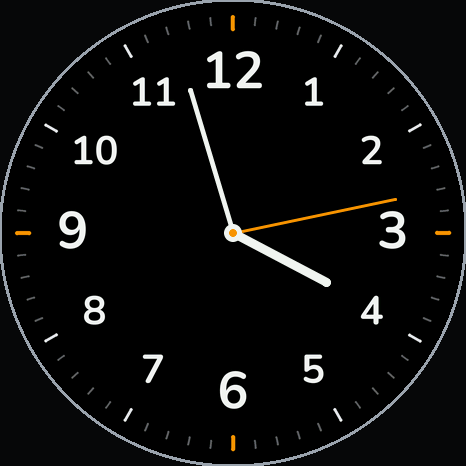
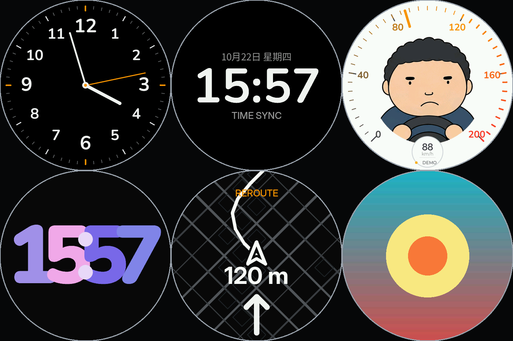
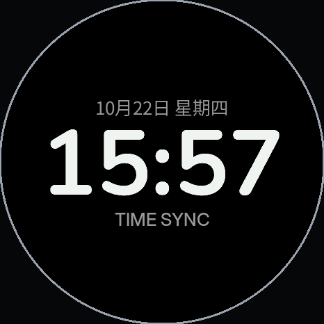
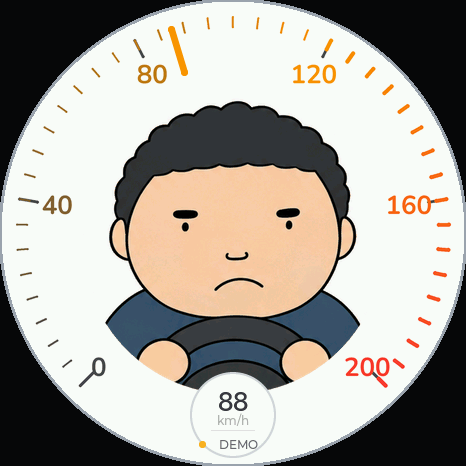
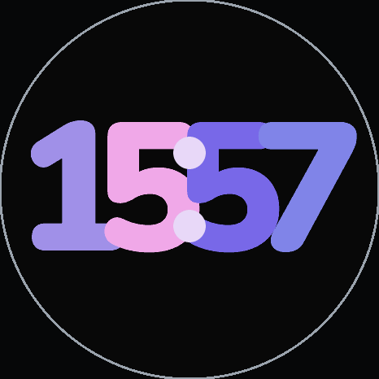
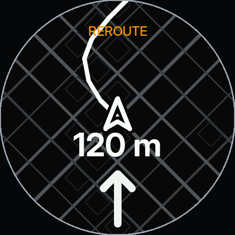
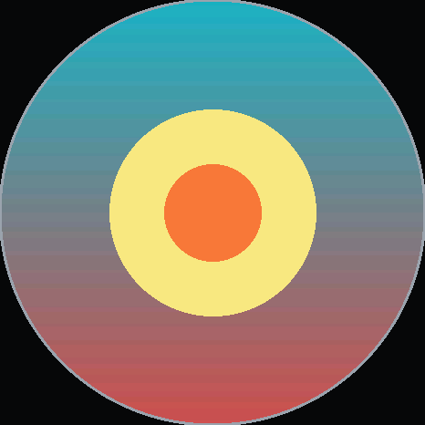
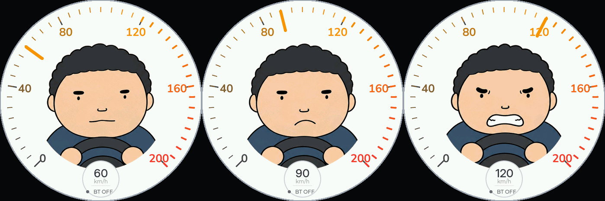
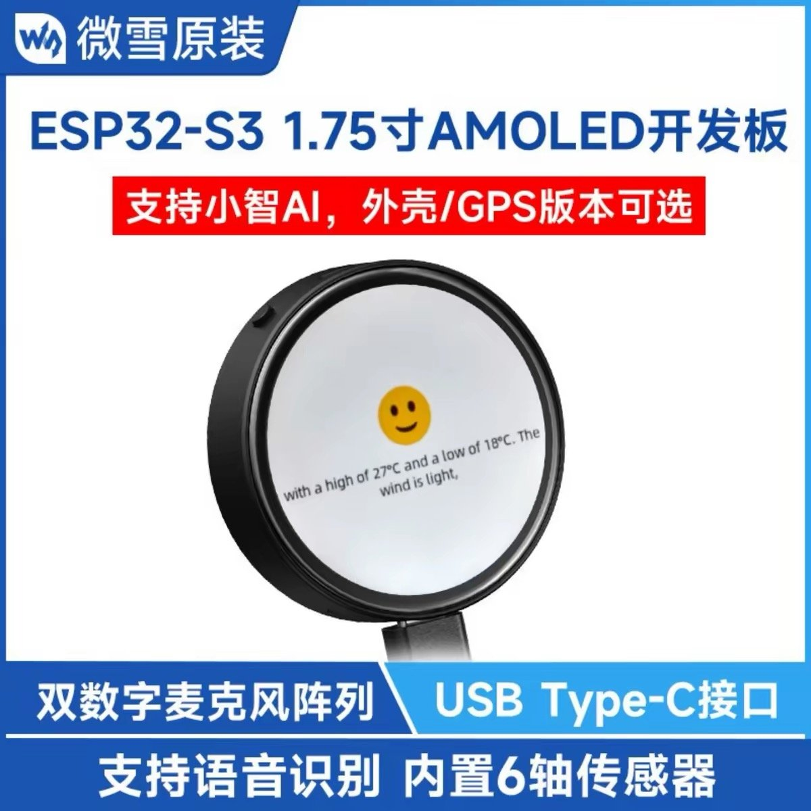
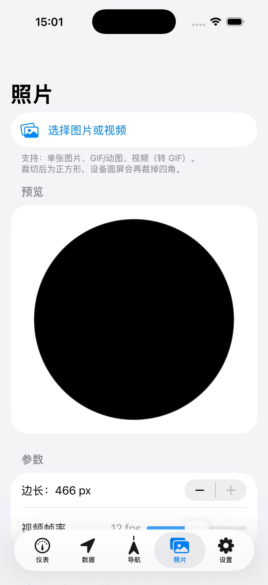

模拟指针钟
极简刻度环 + 三针，橙色秒针
466×466 圆形 AMOLED 上的自制车载仪表盘。
板子没有 GPS —— 位置与导航全部来自 iPhone，经 BLE 传入。

可自由启用 / 隐藏，左右滑动切换

极简刻度环 + 三针，橙色秒针

大字号时间 + 日期 + TIME SYNC 校时状态

指针 + 中央驾驶员插画，三态表情随车速切换

渐变配色，夜间也好看

真实路线图 + 转向箭头 + 剩余距离，走自建网关取高德数据

静态图 / 动图轮播，带完整烧屏防护
阈值对齐现实限速

微雪 Waveshare ESP32-S3-Touch-AMOLED-1.75（带外壳 · 无 GPS）

从设备到手机到网关，全部自己写
ESP32-S3 · LVGL 8.4 · Arduino CLI · 自研 .pgi 图片格式
BLE（遥测 / 控制 / 表盘上报）· 自定义紧凑协议
SwiftUI · CoreBluetooth · Core Location · 圆屏裁切预览
Node.js（零框架）· 高德 Web 服务 · 路线缓存 / 配额保护

iOS App · 照片页（选图 → 圆屏裁切 → 转格式）